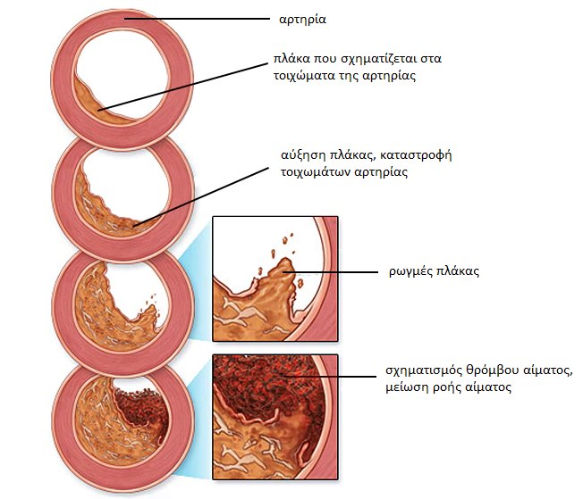

Πώς αντιμετωπίζεται η υψηλή αρτηριακή πίεση στην Ελλάδα; Συνέντευξη στην τοπική τηλεόραση έδωσε ένας Έλληνας καρδιολόγος με ελβετικές ρίζες.
Ο Δρ. Αθανάσιος Γρίντζος είναι κορυφαίος ειδικός στο Κέντρο Κλινικής Καρδιολογίας στην Ελλάδα.

Ο Δρ. Αθανάσιος Γρίντζος ήρθε στην Αθήνα, για να μοιραστεί την εμπειρία του με τους συναδέλφους του και να δει πώς αντιμετωπίζεται η υπέρταση στη χώρα μας. Στην Ελλάδα, η ιατρική εξακολουθεί να υστερεί σε σχέση με την υπόλοιπη Ευρώπη.
Μετά από μια τηλεοπτική συνέντευξη, ο Δρ. Αθανάσιος Γρίντζος συμφώνησε να απαντήσει στις ερωτήσεις μας και να δώσει τις συστάσεις του. Ο γιατρός μας είπε, ποιο είναι το πρόβλημα στην ιατρική μας και είπε ότι οι ασθενείς με υπέρταση στη χώρα μας δεν θα αναρρώσουν ποτέ.
Σε συνέντευξή του, μίλησε για τα τρομερά προβλήματα της ιατρικής μας, όταν το ακούσαμε, εκπλαγήκαμε πολύ. Μπορείτε να το σχολιάσετε αυτό;
Δεν θέλω να προσβάλω κανέναν, σέβομαι αυτή τη χώρα και τους ανθρώπους της, αλλά θέλω να επαναλάβω αυτό που έχω ήδη πει. Το μέγεθος του προβλήματος είναι τρομακτικό, αλλά για κάποιο λόγο, όλοι κλείνουν τα μάτια τους σε αυτό το γεγονός. Η ιατρική στην Ελλάδα βρίσκεται στα ίδια επίπεδα, όπως και πριν από 20 ή 30 χρόνια. Τουλάχιστον όσο αφορά τη θεραπεία των καρδιακών παθήσεων και της υπέρτασης.
Απλώς ακούστε τι προτείνουν οι γιατροί, για τη θεραπεία της υψηλής αρτηριακής πίεσης στην Ελλάδα: λισινοπρίλη, αμλοδιπίνη, χλωρτακλίδη, εναλαπρίλη, βαλσαρτάνη και άλλα παρόμοια φάρμακα.
Αυτά τα φάρμακα δεν θεραπεύουν την υψηλή αρτηριακή πίεση, αλλά μόνο τη μειώνουν προσωρινά. Τώρα φανταστείτε τι συμβαίνει στο σώμα μας, μετά τη λήψη τόσο ισχυρών φαρμάκων. Ο ασθενής παίρνει το φάρμακο, η πίεσή του μειώνεται. Ωστόσο, μετά από λίγο, η πίεση ανεβαίνει ξανά. Τέτοιες αλλαγές προκαλούν μεγαλύτερη βλάβη στον οργανισμό, από τη σταθερή υψηλή αρτηριακή πίεση. Τα αιμοφόρα αγγεία καταστρέφονται πολύ γρήγορα και υπάρχει κίνδυνος της καρδιακής προσβολής ή του εγκεφαλικού επεισοδίου.
Στην Ελβετία, αυτή η μέθοδος θεραπείας της υπέρτασης δεν χρησιμοποιείται για περισσότερα από 20 χρόνια. Και οι γιατροί συνταγογραφούν χάπια για τη μείωση της αρτηριακής πίεσης σε σπάνιες περιπτώσεις, και τέτοια φάρμακα δεν πρέπει να λαμβάνονται κάθε μέρα! Στην Ελβετία, τέτοια ισχυρά ανάλογα φαρμάκων πωλούνται μόνο με την ιατρική συνταγή και ο ασθενής προειδοποιείται για όλους τους κινδύνους από τη λήψη τέτοιων φαρμάκων.
Και οι γιατροί και οι φαρμακοποιοί μας σκοτώνουν κόσμο! Είναι σαφές, ότι η συνεχής πώληση ακριβών φαρμάκων είναι πιο επικερδής, από ό,τι αν ο ασθενής αγόραζε το φάρμακο και θεραπευόταν οριστικά από την υπέρταση. Αυτό δεν είναι επωφελές για τις φαρμακευτικές εταιρείες. Φυσικά είναι τρομερό.
Πώς αντιμετωπίζεται η υψηλή αρτηριακή πίεση στην Ελβετία;
Ελβετοί επιστήμονες γνωρίζουν από καιρό, ότι είναι απαραίτητο να εξαλειφθούν οι αιτίες της υψηλής αρτηριακής πίεσης και να μην καταπολεμηθούν μόνο τα συμπτώματα. Αυτό είναι το κλειδί για την πλήρη και ασφαλή θεραπεία. Ποια είναι η κύρια αιτία της υψηλής αρτηριακής πίεσης; Στένωση του αυλού των αιμοφόρων αγγείων! Η σχετιζόμενη με την ηλικία υπέρταση, εμφανίζεται στους ανθρώπους με την πάροδο του χρόνου και εμφανίζεται στο 96% όλων των περιπτώσεων. Η σύγχρονη ελβετική ιατρική αντιμετωπίζει αυτόν τον τύπο της υπέρτασης.
Φανταστείτε ότι τα αιμοφόρα αγγεία είναι οι σωλήνες. Τα τοιχώματα των σωλήνων είναι βρώμικα, είναι πιο δύσκολο να περάσει το νερό μέσα από αυτά. Ωστόσο, το νερό πρέπει να ρέει και να περνά μέσα από τους σωλήνες σε επαρκείς ποσότητες. Τι πρέπει να γίνει για να ρέει το νερό με επιτυχία; Σωστά, να αυξήσουμε την πίεση. Αυτό κάνει η καρδιά. Και αυτό οδηγεί σε αύξηση της αρτηριακής πίεσης, που σημαίνει ταχεία αύξηση του καρδιακού μυός. Αλλά οι Ελβετοί επιστήμονες βρήκαν μια διαφορετική μέθοδο: να καθαρίσουν τα αιμοφόρα αγγεία από τη ρύπανση. Έτσι αντιμετωπίζεται η υπέρταση στην Ελβετία.
Το 800 μ.χ., οι θεραπευτές άρχισαν να χρησιμοποιούν ένα ειδικό αφέψημα από σπάνια φαρμακευτικά βότανα. Αυτά τα βότανα μειώνουν τα επίπεδα της χοληστερόλης, με αποτέλεσμα τα αιμοφόρα αγγεία να καθαρίζονται, η κυκλοφορία του αίματος ομαλοποιείται και η αρτηριακή πίεση επανέρχεται στο φυσιολογικό. Αυτή η μέθοδος βοήθησε πριν από πολλά χρόνια και βοηθά τώρα. Τα φαρμακευτικά βότανα είναι ο μόνος αξιόπιστος τρόπος για να διατηρήσετε την αρτηριακή πίεση υπό έλεγχο. Δεν χρειάζονται πλέον φάρμακα για τη μείωση της αρτηριακής πίεσης. Καθαρίζοντας τα αιμοφόρα αγγεία με αυτόν τον τρόπο, δεν θα φοβάστε πλέον ότι η υψηλή πίεση θα καταστρέψει τα εσωτερικά όργανα. Οι άνθρωποι μπορούν να γίνουν καλά.
Cuando vi las estadísticas médicas en España, me quedé impactado. España tiene un elevado número de muertes (millones de personas mueren cada año por infartos y infartos). ¡Pero esto no es cáncer, esto no es SIDA, esto es presión arterial alta! ¡El 80% de los pacientes hipertensos no vive hasta los 60 años!
En Suiza, sin embargo, la hipertensión relacionada con la edad y la presión arterial alta no se consideran una enfermedad peligrosa. Un aumento de la presión arterial solo indica que los vasos están sucios y deben limpiarse. Después de eso, la presión deja de aumentar y la persona continúa viviendo una vida normal y saludable.
¿Cómo se limpian los vasos sanguíneos en Suiza?
Actualmente, existen productos especializados diseñados para limpiar los vasos sanguíneos del colesterol. El mejor de estos es Cardiofort. Este producto no contiene productos químicos. El producto es 100% natural y contiene extractos curativos raros de hierbas y bayas: espino, lúpulo, agripalma, hierba de San Juan, tilo y cola de caballo. Por eso es tan beneficioso para el organismo.
Cardiofort incluye más de 40 componentes. No enumeraré todo, solo nombraré algunos.
| Extracto de espino | Reduce la presión arterial de forma natural. Evita la acumulación de sales de sodio en células y vasos sanguíneos. |
| Extracto de hierba de San Juan | Elimina las toxinas de los vasos sanguíneos. |
| Extracto de agripalma | Limpia los vasos sanguíneos del colesterol |
| Extracto de cola de caballo | Aumenta el contenido de oxígeno en la sangre. |
| Extracto de flor de tilo | Expande los vasos sanguíneos, reduce la presión arterial inmediatamente después de tomar las gotas. |
| Vitamina B12 | Nutre y tonifica |
| Potasio | Elimina el exceso de líquido del cuerpo. |
| Sodio | Reduce la hinchazón que a menudo ocurre en pacientes con hipertensión. |
| Fósforo | Aumenta el tono de los vasos sanguíneos, estabiliza la función del sistema nervioso. |
| Calcio | Reduce el riesgo de crisis hipertensiva y accidente cerebrovascular. |
¿Este remedio se vende en farmacias en España?
No, y este es el principal problema. Nuestros médicos prefieren alimentar a las personas con pastillas para la presión arterial en lugar de tratar la hipertensión.
Hasta donde yo sé, los fabricantes de Cardiofort querían entrar en el mercado farmacéutico español, pero la burocracia en España es ineludible y los fabricantes todavía no han dado una respuesta. Pero hay una explicación para esto: si Cardiofort sale a la venta en farmacias, las compañías farmacéuticas sufrirán enormes pérdidas. ¿Por qué comprar pastillas para la presión caras si puede curar la hipertensión de una vez por todas y por un precio razonable? Desafortunadamente, ¡la farmacología hoy en día es un negocio! Incluso en Europa.
¿Qué consejo le daría a los pacientes españoles con hipertensión arterial?
En primer lugar, no se desespere. Hay una salida. Hemos acordado con el mayor Instituto Español de Cardiología, que muy probablemente venderá Cardiofort a todos los españoles que padecen hipertensión. El Instituto produce y distribuye la cantidad requerida de Cardiofort a un precio con descuento.
Ahora déjeme decirle lo que debe hacer para ordenar Cardiofort a un precio con descuento:
- Complete el formulario de pedido en este sitio.
- Después de eso, el especialista se comunicará con usted para confirmar la dirección de entrega.
Podrá recibir `Cardiofort` con entrega a domicilio dentro de 2-3 días, el pago se realiza después de recibir el paquete.
Publicamos los resultados de una encuesta que se realizó entre quienes probaron Cardiofort. El fabricante pidió a todas las personas que compraron el producto que participaran en una encuesta y ayudaran a averiguar si Cardiofort ayudó a mejorar su bienestar. Actualmente, unas 5.000 personas ya han participado en la encuesta.
Los resultados del examen de los pacientes que se someten al tratamiento:
- Presión arterial completamente estabilizada - hipertensión curada: 98% de los encuestados
- El pulso volvió a la normalidad: el 97% de los encuestados;
- Los dolores de cabeza desaparecieron: el 99% de los encuestados;
- Visión mejorada: 74% de los encuestados;
- El estado de salud ha mejorado: el 99% de los encuestados.
Como puede ver, Cardiofort ha ayudado a muchos ciudadanos españoles a deshacerse de una enfermedad mortal en solo 1 tratamiento.
¿Cuánto tiempo estará disponible Cardiofort al precio con descuento?
El instituto distribuirá Cardiofort a un precio con descuento hasta agotar el stock. Quiero advertirle que quedan muy pocos paquetes de Cardiofort. Las personas notan rápidamente la eficacia de este producto en comparación con otras píldoras caras y solicitan Cardiofort en grandes cantidades.
Para mantener limpios los vasos sanguíneos, recomiendo repetir el tratamiento Cardiofort cada 1-2 años, especialmente para los ancianos. Esto le ayudará a mejorar su salud y retrasar los signos del envejecimiento.
Tener los vasos sanguíneos limpios es garantía de salud.

Para obtener «Cardiofort» a un precio con descuento, ingrese su nombre y número de teléfono y haga clic en «Solicitar ahora». Un especialista se pondrá en contacto contigo y te contará todos los detalles.